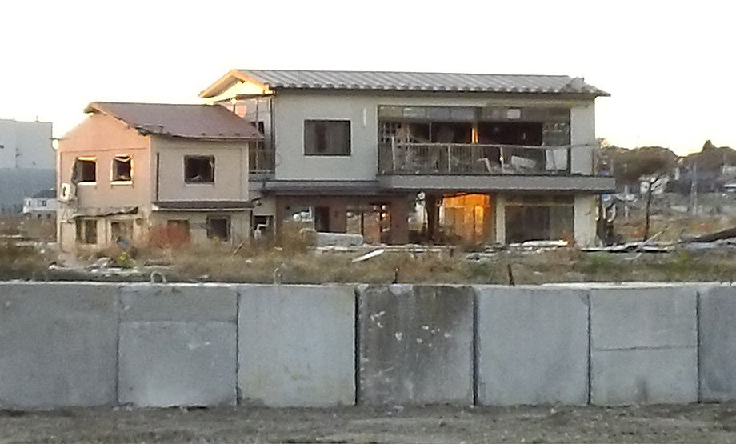
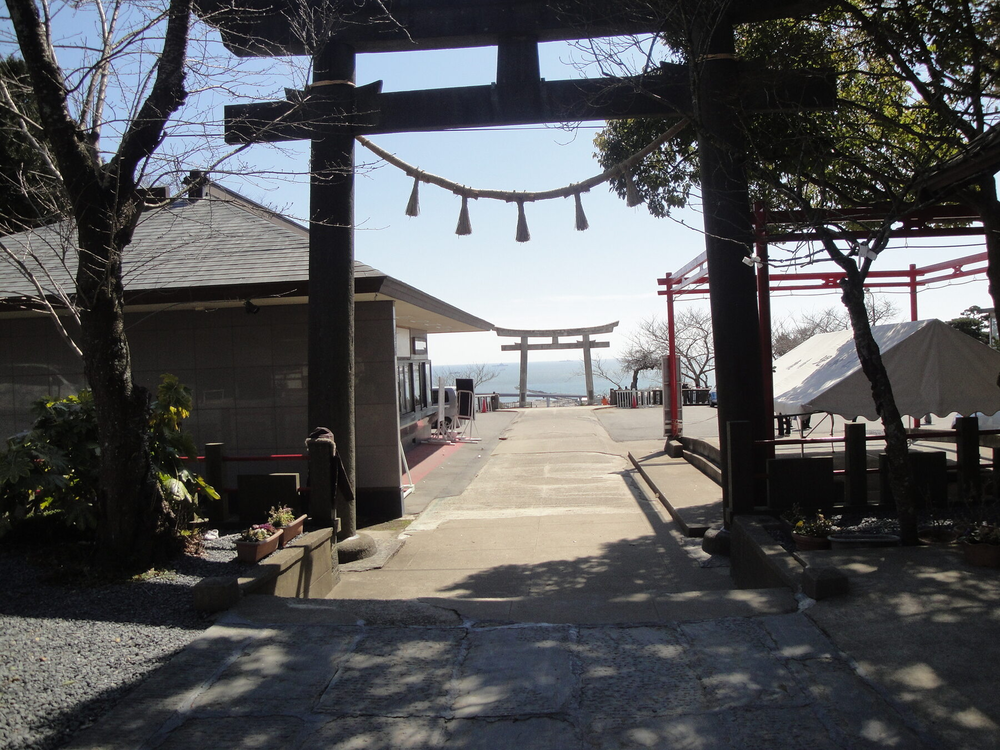
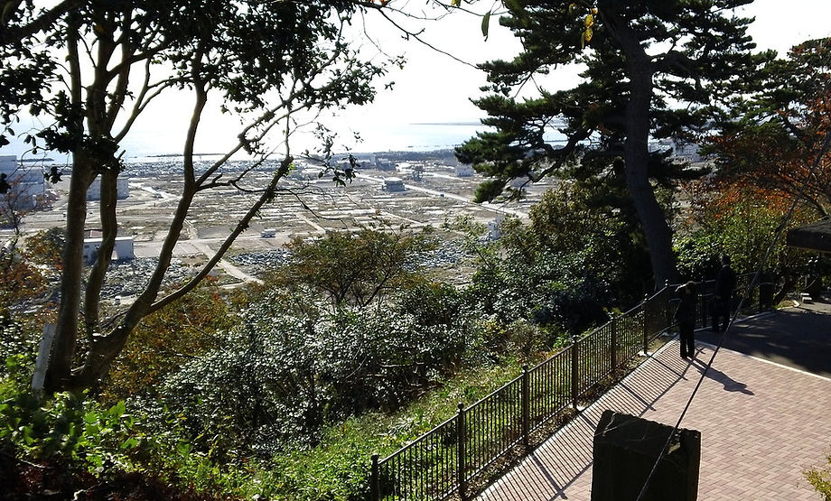

Post-tsunami images of Ishinomaki.
Taylor Anderson taught English in seven Ishinomaki schools as part of the JET programme. She lived in an apartment near Hiyoriyama 日和山 and enjoyed Hanami 花見, walking, relaxing and the lovely view with her friends here.


